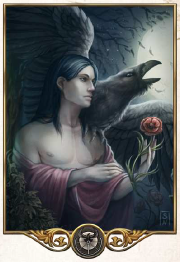

"Alles Endet. Vergänglichkeit ist Gnade und Erlösung."
Aspekte: Schlaf, Tod, Traum, Vergessen
Symbole/Wahrzeichen: Boronsrad (ein zerbrochenes halbes Rad mit 5 Speichen), Balkenwaage, Rabenschwingen
Heiliges Tier: Rabe
Der Unausweichliche ist Herr über das Totenreich. Die meisten Aventurier fürchten ihn eher, als dass sie ihn lieben und in vielen seiner Tempel herrscht ehrfürchtige Stille. Boron ist aber nicht nur der Gott des Todes und der Vergänglichkeit, sondern steht auch für Schlaf und die Gnade des Vergessens. Viele seiner Geweihten sind versierte Traumdeuter und Seelenheiler oder sie dienen als schweigsame Wächter auf den Boronangern und sprechen den letzten Segen für die Verstorbenen. Oft wirken sie unheimlich und unnahbar in ihrer schwarzen Kluft, nicht wenige von ihnen scheren sogar ihr Haupthaar aus Demut oder leben Schweigegelübde ab.
Die Kirche des Boron ist in zwei Kulte gespalten. Der Vorsteher des Puniner Kultes heißt Rabe, nach dem heiligen Tier des Boron und er steht dem Haupttempel in Punin vor. Im Al`Anfaner Ritus wird Boron als höchster Gott verehrt, was regelmäßig zu Konflikten mit den Puninern und anderen zwölfgöttlichen Kirchen führt. Im Süden gibt man sich dem göttlichen Rausch des Vergessens hin und der Freitod als höchstes Opfer an den schweigsamen Gott gesehen. Der Haupttempel dieses Kultes unter dem Patriarchen erhebt sich in Al`Anfa.